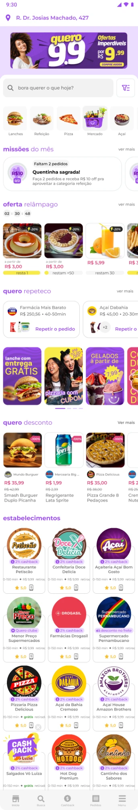
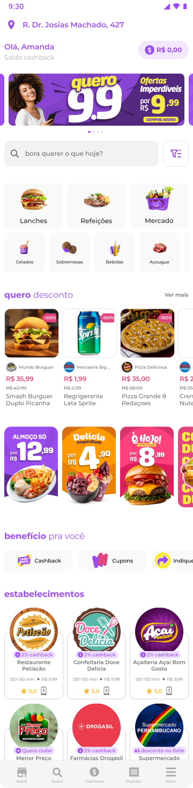

Case 02 · Quero Delivery
Otimização da Home
Reduzindo a carga cognitiva e melhorando a descoberta de produtos
Como utilizei dados comportamentais e princípios da psicologia cognitiva para identificar fricções na jornada, simplificar a experiência da Home e reduzir a taxa de abandono em 50%.
- Empresa
- Quero Delivery
- Papel
- Product Design
- Ano
- 2025
- Resultado
- −50% de abandono na Home
AntesHome original

DepoisHome otimizada

01 · O desafio
Entender por que os usuários não avançavam na jornada
A partir de uma análise da jornada do usuário, identifiquei pontos de fricção que comprometiam a continuidade do fluxo de compra.
Para entender onde essas interrupções aconteciam, mapeamos as etapas da jornada e analisamos os eventos registrados no aplicativo. O objetivo era identificar em quais momentos os usuários abandonavam o fluxo e quais etapas apresentavam maior dificuldade de progressão.
A maior queda acontecia logo no início da jornada, na Home do aplicativo: justamente o primeiro contato do usuário com as opções disponíveis para iniciar um pedido.
- Usuários que realizaram check-in no app
- 386.730
- Usuários que acessaram lojas ou produtos
- 316.496
- Abandono na etapa inicial, cerca de 70 mil usuários
- 18,2%
Funil de jornada do usuário
Usuários em cada etapa, da entrada no app até a compra. Primeira quinzena de dezembro de 2025.
A coluna da direita mostra quanto cada etapa perde em relação à anterior.
Entrada no app → Visualização de loja
Queda: ~18%
USUARIO_CHECK_IN
386.730 usuários (100%)
Total de usuários que iniciaram a jornada. Esse é o ponto de partida do funil.
PLACE_PROFILE_VIEW
316.496 usuários (81,84%)
Aqui já existe uma queda de ~18%. Possíveis causas:
- Usuários entram no app, mas não encontram algo atrativo de imediato.
- Falta de destaque para lojas ou ofertas na Home.
O que isso indica?
Usuários entram no app, mas não se sentem motivados a clicar em uma loja.
Hipóteses
- Home pouco escaneável e interessante
- Falta de destaque para benefícios claros (promoções, cashback, frete, cupons)
- Excesso de opções sem hierarquia
Ações de UX/UI
- Estudar o formato de exibição da Home
- Priorizar lojas, produtos, benefícios ou banners?
- Destaque visual imediato para cashback, promoções ativas e lojas populares
- Melhorar a hierarquia: primeira dobra mais objetiva, menos esforço cognitivo
- Testar microcopies e atalhos mais orientados à ação, como “Ganhe cashback agora”
Esse comportamento levantou uma questão importante: os usuários estavam entrando no aplicativo, mas não encontravam estímulos suficientes para avançar na descoberta de produtos e lojas.
O problema, portanto, não parecia estar apenas na oferta, mas também na maneira como as informações eram apresentadas e organizadas na Home.
02 · Investigação
Entendendo a carga cognitiva da Home
A partir dos dados, formulei três hipóteses principais. Para aprofundar a investigação, analisei a interface sob a perspectiva da psicologia cognitiva, buscando entender como a organização das informações poderia influenciar a percepção, a atenção e a tomada de decisão dos usuários.
Baixa escaneabilidade
A Home não facilitava a identificação rápida de informações relevantes.
Pouca evidência de valor
Promoções, cashback, frete e cupons não tinham o destaque necessário.
Excesso de informações
A quantidade de elementos e a falta de hierarquia dificultavam a compreensão e a navegação.
- Daniel KahnemanSistemas de pensamento
A teoria dos dois sistemas de pensamento ajudou a compreender como a interface poderia facilitar decisões mais rápidas e intuitivas, reduzindo o esforço necessário para interpretar as opções disponíveis.
- Nelson CowanMemória de trabalho
Os estudos sobre memória de trabalho contribuíram para analisar como o excesso de informações simultâneas poderia sobrecarregar a capacidade do usuário de manter e processar diferentes elementos durante a navegação.
- George A. MillerProcessamento de informações
Os estudos sobre os limites da capacidade de processamento de informações trouxeram referências para avaliar a quantidade de elementos apresentados e a necessidade de organizar melhor os estímulos visuais.
O diagnóstico
20 minem média entre o check-in e a realização do pedido.
A análise apontou que a Home concentrava muitas informações e estímulos em um mesmo ambiente, sem uma hierarquia suficientemente clara.
Isso aumentava o esforço necessário para identificar oportunidades, comparar opções e decidir onde iniciar um pedido. O tempo médio até o pedido reforçava a necessidade de investigar essa experiência.
Hipótese central: poderíamos facilitar a descoberta e a tomada de decisão reorganizando a hierarquia de informações e reduzindo a carga cognitiva da Home.
03 · Estratégia
Transformar dados em decisões de design
Com o diagnóstico estabelecido, avancei para uma análise mais aprofundada do comportamento dos usuários dentro da própria Home.
Coletei dados de cliques e conversões das seções disponíveis para entender quais áreas realmente contribuíam para a jornada e quais apresentavam baixa performance. Esse cruzamento permitiu identificar oportunidades com base no comportamento real, evitando decisões fundamentadas apenas em preferências visuais.
Em paralelo, alinhei os resultados e as oportunidades com os times de Produto e Negócio, garantindo que as mudanças também considerassem os objetivos estratégicos do aplicativo.
Desempenho das seções da Home
| Seção | Ago 2025 | % | Out 2025 | % | Nov 2025 | % |
|---|---|---|---|---|---|---|
| Categoria | 245.157 | 31,0% | 259.980 | 31,0% | 281.969 | 31,2% |
| Pesquisa | 221.807 | 28,0% | 226.814 | 27,1% | 246.796 | 27,3% |
| Listagem de lojas | 223.392 | 28,2% | 258.218 | 30,8% | 283.107 | 31,3% |
| Quero Repeteco | 68.847 | 8,7% | 64.551 | 7,7% | 55.828 | 6,2% |
| Banner | 12.325 | 1,6% | 15.086 | 1,8% | 19.734 | 2,2% |
| Quero Desconto | 9.307 | 1,2% | 11.785 | 1,4% | 13.754 | 1,5% |
| Produtos recomendados por IA | 4.638 | 0,6% | 31 | 0,0% | 33 | 0,0% |
| Frete grátis | 3.882 | 0,5% | — | 0,0% | — | 0,0% |
| Cartão fidelidade | 1.320 | 0,2% | 1.666 | 0,2% | 1.724 | 0,2% |
| Cashback | 1.352 | 0,2% | 305 | 0,0% | 303 | 0,0% |
| Seção | Ago 2025 | Variação | Out 2025 | Variação | Nov 2025 |
|---|---|---|---|---|---|
| Categoria | 1.720.092 | −12,8% | 1.499.788 | +3,4% | 1.551.090 |
| Pesquisa | 3.896.056 | −9,5% | 3.524.582 | +5,2% | 3.707.646 |
| Listagem de lojas | 2.170.047 | +10,8% | 2.404.093 | +4,6% | 2.514.503 |
| Quero Repeteco | 105.308 | −8,0% | 96.931 | −11,7% | 85.585 |
| Banner | 436.588 | −2,0% | 427.858 | +31,7% | 563.276 |
| Quero Desconto | 184.400 | +27,3% | 234.693 | +7,9% | 253.225 |
| Seção | Ago 2025 | Variação | Out 2025 | Variação | Nov 2025 |
|---|---|---|---|---|---|
| Categoria | 14,3% | +12,2% | 17,3% | +4,9% | 18,2% |
| Pesquisa | 5,7% | +5,3% | 6,4% | +3,4% | 6,7% |
| Listagem de lojas | 10,3% | −4,3% | 10,7% | +4,8% | 11,3% |
| Quero Repeteco | 65,4% | −0,6% | 66,6% | −2,0% | 65,2% |
| Banner | 2,8% | +13,4% | 3,5% | −0,6% | 3,5% |
| Quero Desconto | 5,0% | −9,3% | 5,0% | +8,2% | 5,4% |
A partir dessas análises, defini três frentes de atuação:
Reorganização da comunicação
Algumas seções passaram por ajustes de layout para melhorar a hierarquia visual, facilitar a leitura e tornar as informações mais escaneáveis.
Priorização de conteúdo
As seções com menor performance foram removidas, reduzindo a quantidade de informações concorrendo pela atenção do usuário.
Redução da densidade visual
Aumentei os espaçamentos entre as seções, com mais áreas de respiro (white space) para diminuir a sensação de excesso e facilitar a identificação de cada conteúdo.
04 · Execução
Evolução gradual da experiência
Em vez de reformular toda a Home de uma única vez, optei por implementar as mudanças de forma progressiva.
Essa decisão tinha dois objetivos: reduzir o impacto de uma transformação brusca na experiência dos usuários e acompanhar o comportamento da jornada a cada intervenção. Assim, observamos os resultados gradualmente e entendemos como cada ajuste contribuía para a evolução da experiência.
A solução final trouxe uma Home visualmente mais limpa, com melhor distribuição das informações e uma hierarquia mais clara. As seções de melhor performance passaram a receber maior destaque e foram distribuídas de maneira mais estratégica, evitando que diferentes conteúdos competissem pela atenção do usuário.
O foco deixou de ser simplesmente exibir mais opções e passou a ser facilitar a descoberta das opções mais relevantes.
AntesHome original
DepoisHome otimizada
05 · Impacto
Reduzindo o abandono pela metade
de redução relativa no abandono da etapa inicial da jornada.Após a implementação das melhorias, acompanhamos a evolução da taxa de abandono entre o check-in e o acesso a uma loja ou produto.
Taxa de abandono
O que aprendi
Mais que uma mudança visual
A reorganização da Home contribuiu para tornar a experiência mais objetiva, melhorar a distribuição dos conteúdos e facilitar a descoberta de lojas e produtos.
O projeto demonstrou como decisões de design fundamentadas em dados comportamentais e princípios cognitivos podem impactar diretamente a eficiência de uma jornada.
Uma boa experiência não depende de apresentar mais informações, mas de apresentar as informações certas, no momento certo e com a hierarquia adequada.
Vamos conversar
sobre o seu produto.
Aberto a conversas sobre produto, design e novas oportunidades.